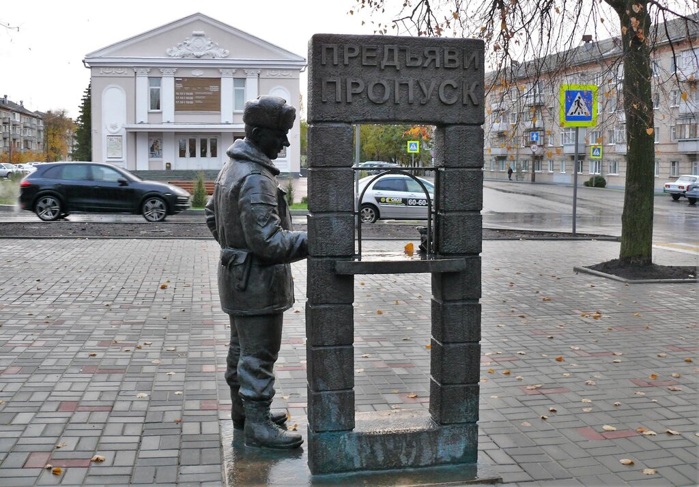
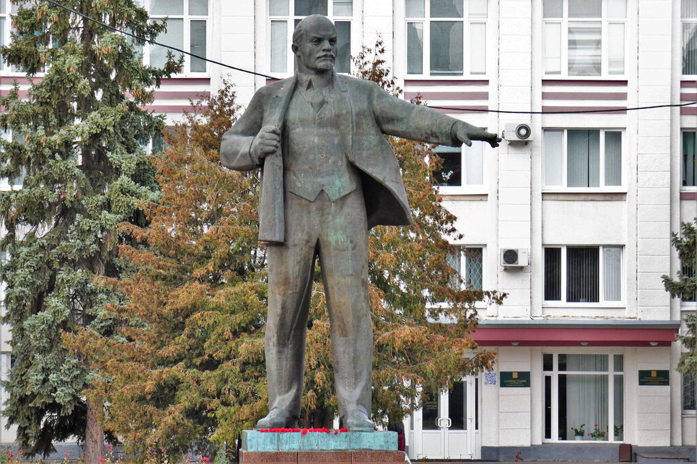
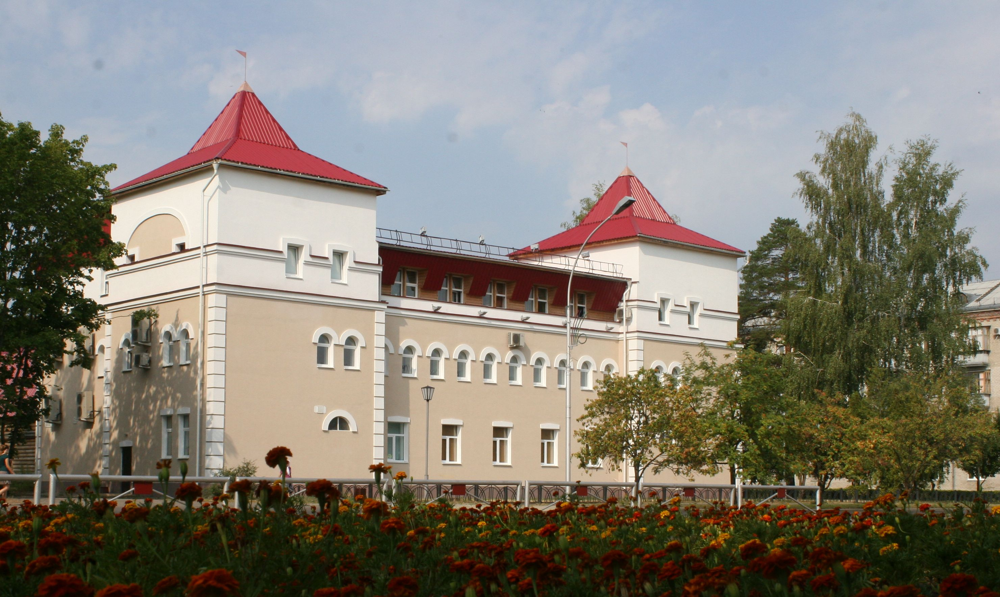
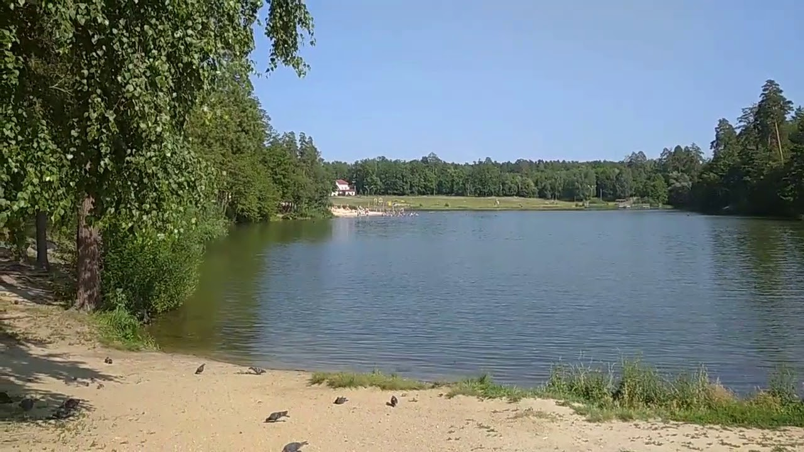
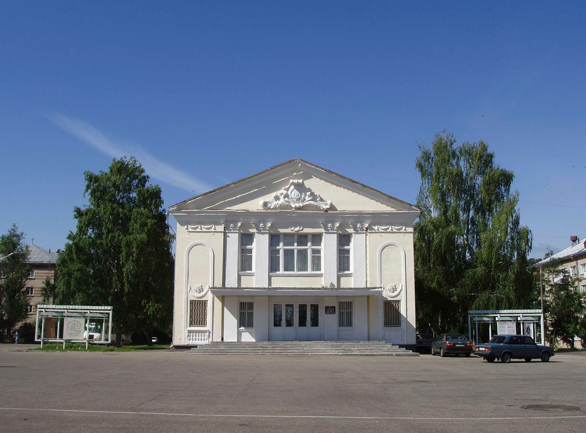
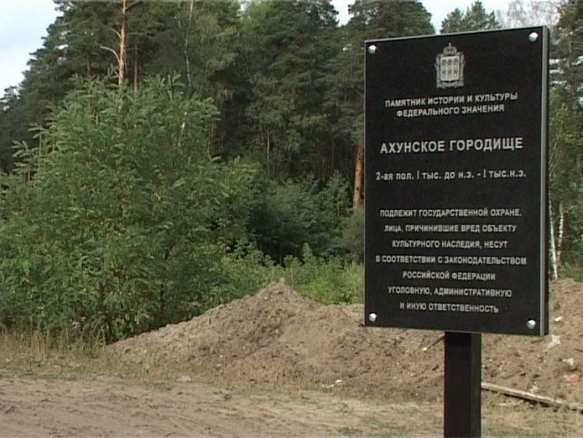
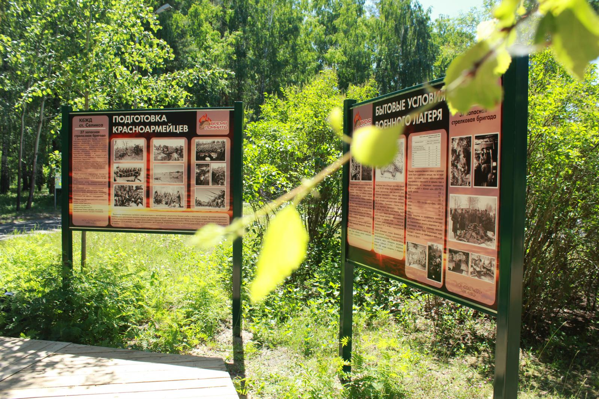
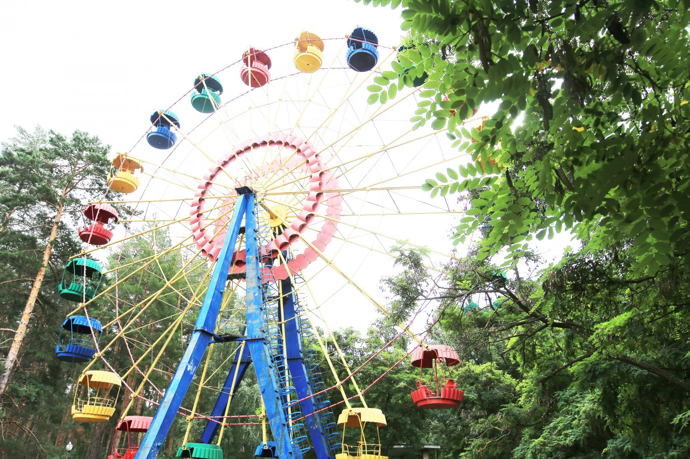

Самые интересные и красивые места
Список, фото и названия лучших достопримечательностей
Благодаря этому сайту вы сможете заранее ознакомиться с достопримечательностями города Заречный Пензенской области, запланировать маршрут для их посещения,
а так же, получить дополнительную информацию о том, когда, кем и в честь чего они были построены.Благодаря данной информации вы узнаете намного больше о городе Заречный
чем многие его жители.Так же это может помочь вам в создании доклада или проектной деятельности.Информация на этом сайте будет полезна любому поколению.
Достопримечательности
города Заречный Пензенской области

Арт-объект «Памятник пропуску»
В рамках празднования 55-летия Заречного напротив бывшего кинотеатра «Россия» был установлен бронзовый арт-объект, созданный пензенским скульптором Германом Феоктистовым. Памятник представляет собой композицию из окна с надписью «Предъяви пропуск» и сурового прапорщика, стоящего рядом. В окно пытается прошмыгнуть мышь с котомкой, однако ей это явно не удается. Посыл вполне очевиден: через охраняемый периметр ЗАТО никогда и никто не проскочит без разрешения, даже самый мелкий зверёк. В 2020 году памятник пропуску перенесли на аллею между парком имени Лермонтова и ТЮЗом в новую зону отдыха с прогулочными дорожками и скамейками.

Памятник Ленина
Данный памятник решили создать в честь 100-летия со дня рождения Ленина (1970 год).В 1968 году наш памятник Ленину выставлялся в столице на Всесоюзной выставке. Все скульптуры располагались в павильоне, однако наш памятник высотой в 5,5 метра туда не поместился, поэтому стоял прямо на Манежной площади лицом к гостинице «Москва».Из Москвы в Заречный памятник перевозили на трейлере в сопровождении ГАИ. Скульптура лежала на спине, указывая рукой в небо. В наш город Ленин заехал через Монтажную проходную, немного задев торчащей рукой провода, но освободить вождя и отвезти на 58 квартал удалось быстро. Там под строжайшим секретом он почти год пролежал на спине.

Музейно-выставочный центр г. Заречного
МУК «Музейно-выставочный центр» - одно из наиболее крупных городских учреждений культуры, сочетающее в себе черты исторического, этнографического, естественного и художественного музеев. Музей — центр научного документирования письменных и вещественных источников по истории города, который ведет большую научно-исследовательскую работу по их изучению. Коллекция музея насчитывает более 60000 экспонатов и охватывает все исторические периоды города Заречного и Пензенской области. Действуют 11 выставочных залов, размещенных на двух этажах.

Зона отдыха «Лесная»
Любимым местом отдыха горожан является зона отдыха «Лесная», включающая в себя искусственный пруд с обустроенными пляжами, дамбой и маяком. В 2013 г. к 55-летию города Заречного была обустроена набережная пруда и установлен маяк. В 2018 г. произведено комплексное благоустройство зоны отдыха: оборудованы детская и спортивная площадки, проложены пешеходные дорожки, проведено освещение, установлены надводные сооружения.

Театр юного зрителя
Театр юного зрителя — культурное место отдыха для жителей города Заречного. Ежегодно театр выпускает 5–6 премьер, каждая из которых становится заметным театральным событием в жизни города. На сцене ТЮЗа помимо детских ставятся постановки для старшего поколения, которые также популярны среди взрослой аудитории. ТЮЗ ведет активную гастрольную деятельность, сегодня театр является лауреатом и дипломантом престижных фестивалей. По итогам деятельности МУ «Театр юного зрителя г. Заречного» не раз был занесен на Городскую доску почета в 2006, 2012, 2015 годах.

Ахунское городище
Древнейшим историческим памятником, найденным на территории города Заречного, является Ахунское I городище. Памятник обнаружен в 1956 г. экспедицией под руководством М.Р. Полесских. Городище расположено внутри жилой застройки, в лесном массиве, на мысу, образованном слиянием двух оврагов глубиной от 10 до 15 метров, по дну которых в древности протекали небольшие речки, а сегодня ручьи. С военной точки зрения, Ахунское городище представляло мощную оборонительную систему. Памятник включен в Перечень объектов исторического и культурного наследия федерального (общероссийского) значения.

Парк памяти г. Заречного
В годы Великой Отечественной войны на территории современного г. Заречного Пензенской области, в районе ж/д станции Селикса дислоцировалась 37-я запасная стрелковая бригада (с 1944 г. – дивизия), подготовившая для фронта более 400 тыс. бойцов. На территории современного парка им. М.Ю. Лермонтова в г. Заречном сохранились следы от окопов, а также разноразмерные ямы от землянок, блиндажей, командно-наблюдательных пунктов и т. д. В 2018 г. на участке данной территории специалистами городского Музейно-выставочного центра и учащимися школы №221 был создан Парк памяти –музейно-мемориальный комплекс, включающий в себя информационные стенды и памятную доску.

ЦПКиО «Заречье»
Центральный парк культуры и отдыха «Заречье» расположен на месте естественного лесного массива. Уникальность зареченского парка проявляется в гармонии экосистемы, сохранившей все преимущества естественного ландшафта. Работы по благоустройству производились с сохранением природных качеств территории, с минимальными нагрузками на природный комплекс. Вопреки сложившейся в России традиции, парк не имеет высотного ограждения по периметру и круглосуточно открыт для горожан.К сожалению, на данный момент многие атракционы не функционируют.
Информация
Зачем создавался сайт?
Данный сайт создавался ради школьного проекта по информатике. Тема была выбрана не только близкая к ученику, но и полезная т.к. сайтов про достопримечательности Заречного не так много, а те которые есть либо имеют не полную информацию, либо визуально не очень хорошо проработаны.
Зачем блок выше
Для чего можно связаться?
Если вы заметили какую либо ошибку, неточность в данных или просто проблему в работоспособности чего-либо, то можете уточнить детали данной проблемы и, вскоре, она будет исправленна. Так же если у вас появилось желание получить подобный сайт, то также можете связаться.
Связь
Есть ли другой способ связаться?
Да, вы можете написать письмо на электронную почту: g1tixs@mail.ru или g1tixs@yandex.ru.